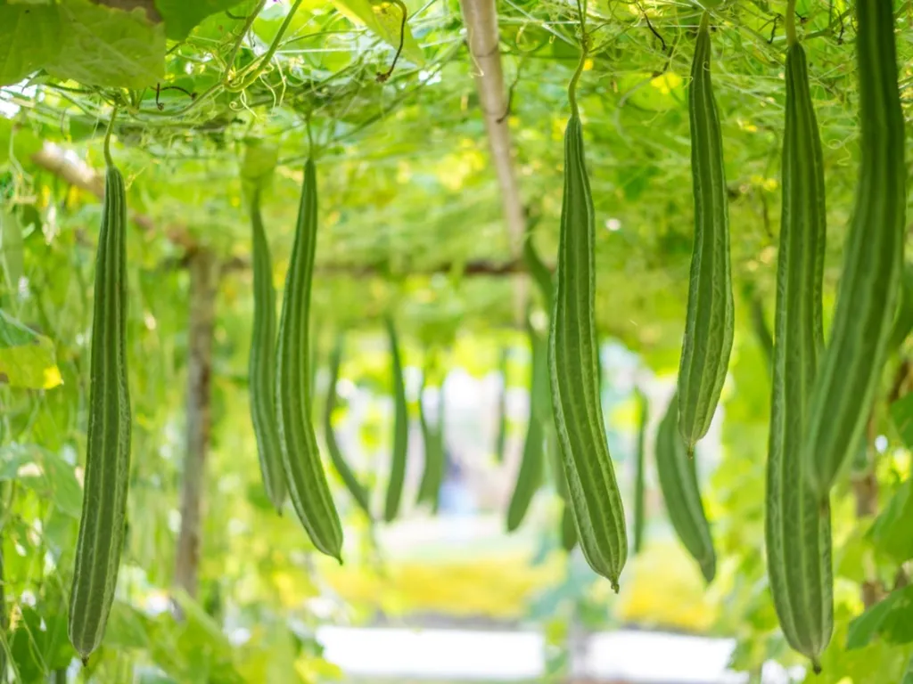

বর্ষজীবী লতাগাছ কিন্তু কোণ বিশিষ্ট, মসৃণ গাঁট থেকে
নুতন কান্ড বের হয় ও পরিনত সময়ে ফুল ও ফল
হয়, লতাটি আকর্ষযুক্ত, (সাধারনত) বেড়ায় গায়ে,
মাচায় ও অন্য গাছকে আশ্রয় করে প্রসারিত হয়ে
থাকে। সাধারনত স্ত্রী পুরুষ ভেদে লাউ কুমড়োর মত
দুই রকমের ফুল হয়। স্ত্রী জাতীয় ফুল থেকেই ফল
হয়। ফুলের বর্ণ ঈষৎ হলদে। সন্ধ্যার পূর্বে ফুল ফোটে।
সবুজ বর্ণের ফল বোঁটার দিক থেকে ক্রমশঃ মোটা এবং
শিরতোলা, এজন্য এর নাম ধারা কোষাতকী। ফলের
অভ্যন্তরস্থ প্রকোষ্ঠগুলি যেন জাল বুনে তৈরী। সেটা
দেখা যায় ফল পাকলে। প্রকোষ্ঠের মধ্যে অনেকগুলি
বীজ থাকে। এগুলি দেখতে অনেকটা ডিম্বাকৃতি ও চেপ্টা।
এর কচি ফলই তরকারী হিসেবে ব্যবহৃত হয়। ভারতের
সর্ব প্রদেশেই কমবেশী এর চাষ হয়।